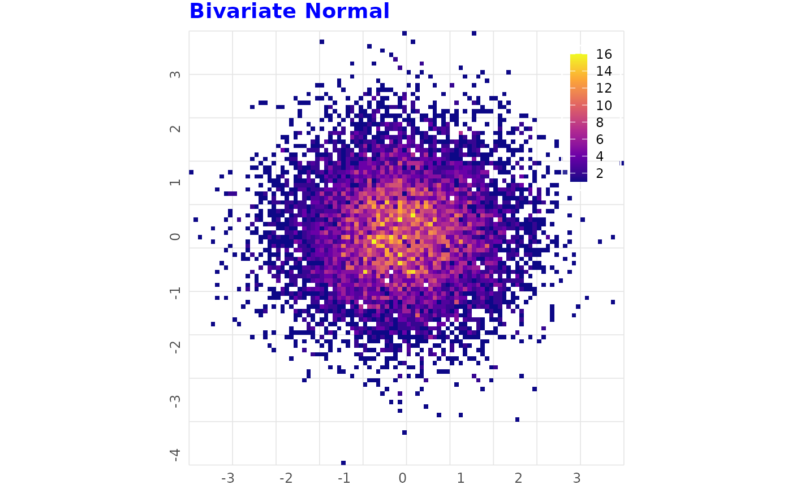
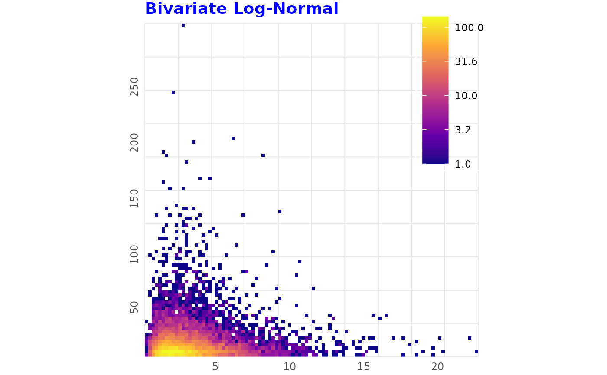
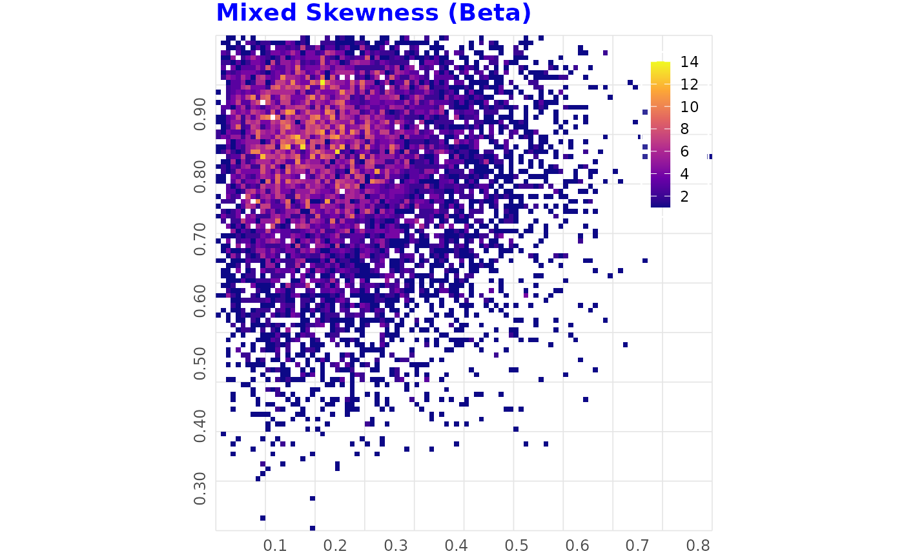
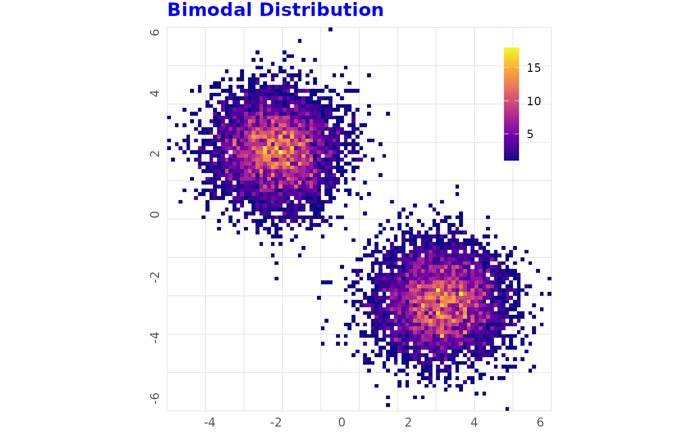
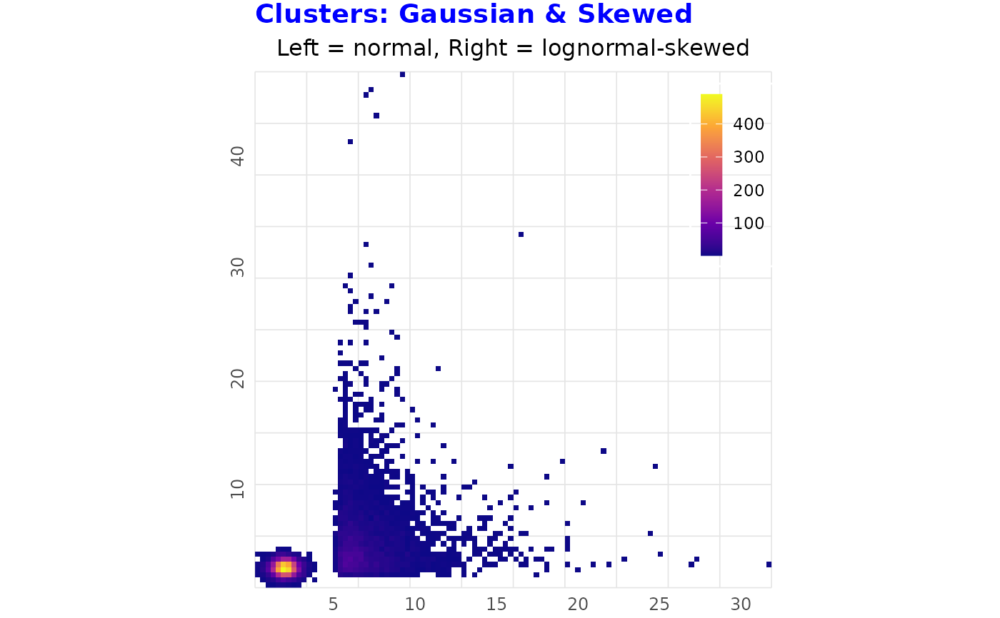
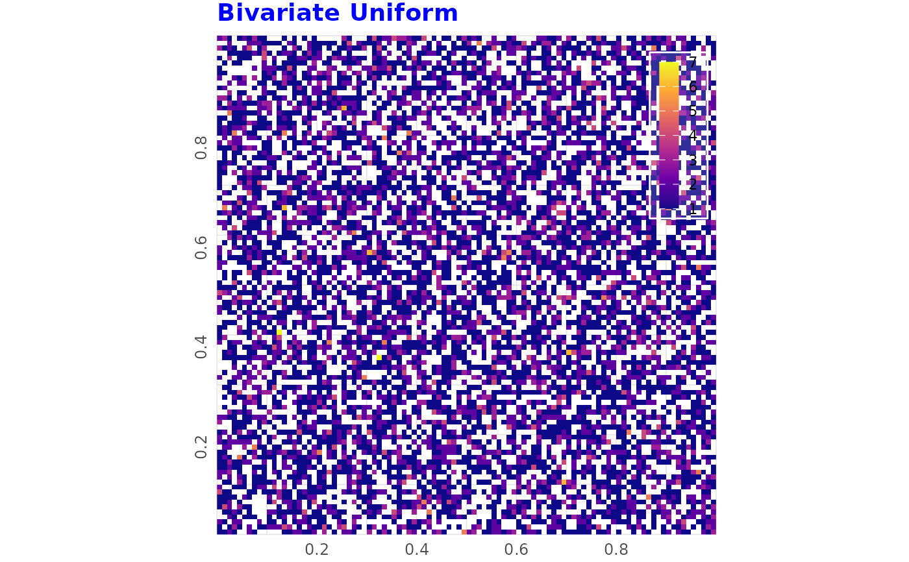
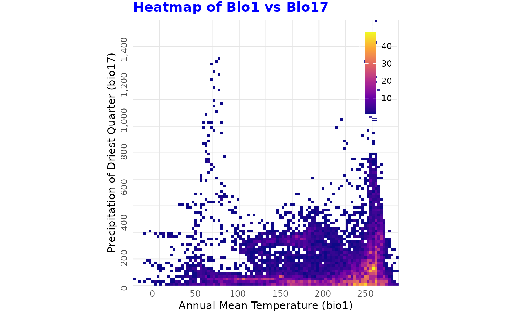

Creates a tile-binned frequency heatmap of two variables using rasterization
for efficient handling of large datasets. The function supports log10
transformations for axes and fill scale, and allows customization of axis
labels, title, and subtitle. The function can be useful to visualize the
distribution and density of points in a two-dimensional space, especially for
large datasets where traditional scatter plots may become cluttered. It can
help identify patterns, clusters, and outliers in the data.
Usage
binned_heatmap(
data,
x,
y,
nrow = 100L,
ncol = 100L,
log_x = FALSE,
log_y = FALSE,
log_fill = FALSE,
xlab = NULL,
ylab = NULL,
title = NULL,
subtitle = NULL,
n_breaks = 6L
)Arguments
- data
A data frame containing the variables to plot.
- x, y
Character string specifying the column name for the x and y-axis variables.
- nrow, ncol
Integer specifying the number of rows and columns in the raster grid (default: 100).
- log_x, log_y
Logical indicating whether to apply log10 transformation to x and y axes (default: FALSE).
- log_fill
Logical indicating whether to use log10 scale for the fill (default: FALSE).
- xlab, ylab
Character string for the x and y axis label (default:
NULL).- title
Character string for the plot title (default:
NULL).- subtitle
Character string for the plot subtitle (default:
NULL).- n_breaks
Integer specifying the approximate number of breaks for axes and colour bar (default: 6).
Examples
# ------------------------------------------------
# Bivariate Normal Data (No Skew)
# ------------------------------------------------
n <- 10000
set.seed(1)
df_norm <- data.frame(
x = rnorm(n, mean = 0, sd = 1),
y = rnorm(n, mean = 0, sd = 1))
binned_heatmap(df_norm, x = "x", y = "y", title = "Bivariate Normal")

# ------------------------------------------------
# Strongly Right-Skewed (Log-Normal)
# ------------------------------------------------
set.seed(2)
df_lognorm <- data.frame(
x = rlnorm(n, meanlog = 1, sdlog = 0.6),
y = rlnorm(n, meanlog = 2, sdlog = 1))
binned_heatmap(
df_lognorm, x = "x", y = "y",
title = "Bivariate Log-Normal", log_fill = TRUE)

# ------------------------------------------------
# Left- and Right-Skewed (Beta Shapes)
# ------------------------------------------------
set.seed(3)
df_beta <- data.frame(
x = rbeta(n, shape1 = 2, shape2 = 7), y = rbeta(n, shape1 = 7, shape2 = 2))
binned_heatmap(df_beta, x = "x", y = "y", title = "Mixed Skewness (Beta)")

# ------------------------------------------------
# Strong Bimodal Data
# ------------------------------------------------
set.seed(4)
x_bimodal <- c(rnorm(n / 2, -2), rnorm(n / 2, 3))
y_bimodal <- c(rnorm(n / 2, 2), rnorm(n / 2, -3))
df_bimodal <- data.frame(x = x_bimodal, y = y_bimodal)
binned_heatmap(df_bimodal, x = "x", y = "y", title = "Bimodal Distribution")

# ------------------------------------------------
# Clustered Data (Two Clusters, One Skewed)
# ------------------------------------------------
set.seed(5)
n_ct1 <- 6000
n_ct2 <- 4000
df_clusters <- data.frame(
x = c(rnorm(n_ct1, 2, 0.5), rlnorm(n_ct2, 0.5, 0.8) + 5),
y = c(rnorm(n_ct1, 2, 0.5), rlnorm(n_ct2, 1, 0.8) + 1))
binned_heatmap(
df_clusters, x = "x", y = "y",
title = "Clusters: Gaussian & Skewed",
subtitle = "Left = normal, Right = lognormal-skewed")

# ------------------------------------------------
# Uniform Data (No Skew or Clustering)
# ------------------------------------------------
set.seed(6)
df_uniform <- data.frame(
x = runif(n, min = 0, max = 1), y = runif(n, min = 0, max = 1))
binned_heatmap(df_uniform, x = "x", y = "y", title = "Bivariate Uniform")

# ------------------------------------------------
# Example using dismo bioclimatic variables
# ------------------------------------------------
# Plotting frequency heatmaps of bioclimatic variables from the dismo package
ecokit::load_packages(dplyr, dismo, terra)
predictors <- list.files(
path = paste(system.file(package = "dismo"), "/ex", sep = ""),
pattern = "grd", full.names = TRUE) %>%
terra::rast() %>%
as.data.frame(xy = FALSE) %>%
tibble::tibble()
head(predictors)
#> # A tibble: 6 × 9
#> bio1 bio12 bio16 bio17 bio5 bio6 bio7 bio8 biome
#> <int> <int> <int> <int> <int> <int> <int> <int> <int>
#> 1 113 1800 936 32 242 24 218 73 5
#> 2 112 1556 810 27 265 10 255 66 5
#> 3 112 1263 662 24 302 -14 316 53 5
#> 4 110 1049 532 26 301 -19 319 49 5
#> 5 161 532 276 16 351 19 332 81 8
#> 6 153 855 438 19 340 16 324 76 8
binned_heatmap(
predictors, x = "bio1", y = "bio17",
xlab = "Annual Mean Temperature (bio1)",
ylab = "Precipitation of Driest Quarter (bio17)",
title = "Heatmap of Bio1 vs Bio17")

binned_heatmap(
predictors, x = "bio12", y = "bio8",
xlab = "Annual Precipitation (bio12)",
ylab = "Mean Temperature of Wettest Quarter (bio8)",
title = "Heatmap of Bio12 vs Bio8")